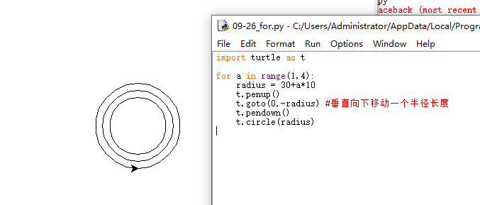

前言：
学习了python的while循环后感觉循环是挺强大的。下面学习一个更智能，更强大的循环-- for循环。
课程内容：
1、由while循环，到for循环，格式和注意项
2、for循环来报数
3、for循环的智能操作
一图
格式和注意项
while循环的格式，
1. 条件
2. 冒号
3.tab缩进 （冒号和缩进是搭配使用的）
1 while 条件：
2 pass
3
4 如，
5 a = 1
6 while a < 3:
7 print("hi")
8 a = a + 1for 循环的格式，
1. for 变量 in 可迭代对象
2. 冒号
3. tab缩进
1 for 变量 in 可迭代对象：
2 pass
3
4 如输出三次，“帅锅”，
5
6 for a in range(3):
7 print("甩锅")其中，range() 是python的一个内置函数，用于生成一系列连续的整数, 是一个可迭代对象。
range(start, stop[, step])
start--->>从某数开始计数，默认0
stop--->>从某数结束，顾头不顾尾
step--->>步长
要求，用循环及turtle库画三个圆或者三个同心圆
1 #example 1
2 import turtle as t
3 a = 1
4 while a < 4:
5 t.circle(30+a*10)
6 a = a+1
7
8 #example 2
9 import turtle as t
10 for a range(1,4):
11 t.circle(30+a*10)
12
13 #example 3
14 import turtle as t
15 for a range(40,60+1, 10):
16 t.circle(a)
报数
请输出0-10的数字
1 #example 1
2 for i in range(11):
3 print(i)
4
5 #example 2
6 for i in range(0,11):
7 print(i)
8
9 #example 3
10 for i in range(0,11, 1):
11 print(i)请输出0-10的偶数
1 for i in range(0,11, 2):
2 print(i)开启for循环的智能操作
我想用for循环输出几个心意的数字，66，88，99，68，6，0，1，8，888，686
1 #智能的必然是简单的
2 #example 1
3 for i in [66，88，99，68，6，0，1，8，888，686]:
4 print(i)
5
6 #example 2
7 a = [66，88，99，68，6，0，1，8，888，686]
8 for i in a:
9 print(i)
10
11 #example 3
12 a = [66，88，99，68，6，0，1，8，888，686]
13 for i in range(10):
14 print(a[i])其中，[66，88，99，68，6，0，1，8，888，686]叫做列表，可以用下标引用，如上面 #example 3 , a[0]就是66，a[9]就是686.
写在最后
for循环在做，有明确次数的循环时，配合range是很方便的，不用定义变量，不用手动改变数据就能实现。
for配合列表等可迭代对象就能轻松的遍历里面的数据，智能的很